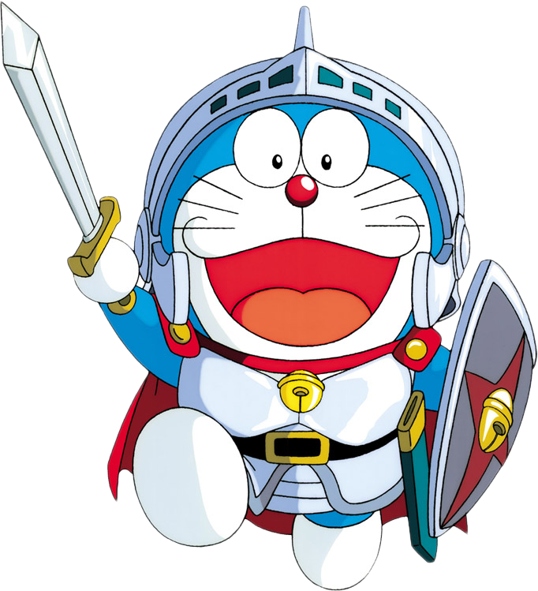

3D AIGC · MLLM · Image processing
Baolin Liu
(刘宝林)
Ph.D. student in Computer Science and Technology at Beijing University of Posts and Telecommunications, working on 3D AIGC, multimodal visual intelligence, image restoration, and light-field / naked-eye 3D display.

Research
My recent work explores generative models and visual representation learning for practical image enhancement, 3D understanding, 3D generation, point cloud segmentation, and immersive display applications.
Publications
| Year | Title | Authors | Venue |
|---|---|---|---|
| 2026 | StereoEdit: A Diffusion-Based Framework for Stereo-Consistent Image Editing | B Liu, Z Yang, Y Song, Y Xiong | ECCV 2026 |
| 2026 | PFR-Net: Reliability-Ordered Evidence Routing for Light Field Denoising | B Liu, Y Song, Z Yang, Y Xiong | PRCV 2026 |
| 2026 | ELF: Edit anything for light field displays | B Liu, Z Yang, Y Song, Y Xiong | Pattern Recognition 2026 |
| 2026 | EVA01: Unified Native 3D Understanding and Generation via Mixture-of-Transformers | Z Yang, M Yi, W Ma, C Fan, B Li, B Liu, Y Lou, Y Song, Y Xiong, Z Guo, ... | arXiv 2026 |
| 2025 | TextDiff: Enhancing scene text image super-resolution with mask-guided residual diffusion models | B Liu, Z Yang, C Chiu, Y Xiong | Pattern Recognition 2025 |
| 2025 | EYE3: Turn Anything into Naked-eye 3D | Y Song, Z Yang, B Liu, Y Xiong, S Chen, L Yi, Z Zhang, X Yu | ICCV 2025 |
| 2024 | DirectL: Efficient Radiance Fields Rendering for 3D Light Field Displays | Z Yang, B Liu, Y Song, L Yi, Y Xiong, Z Zhang, X Yu | TOG 2024 |
| 2024 | GDB: gated convolutions-based document binarization | Z Yang, B Liu, Y Xiong, G Wu | Pattern Recognition 2024 |
| 2024 | Fat: Field-aware transformer for point cloud segmentation with adaptive attention fields | J Zhou, B Liu, Y Xiong, C Chiu, F Liu, X Gong | IEEE TII 2024 |
| 2023 | Docdiff: Document enhancement via residual diffusion models | Z Yang, B Liu, Y Xxiong, L Yi, G Wu, X Tang, Z Liu, J Zhou, X Zhang | ACM MM 2023 |